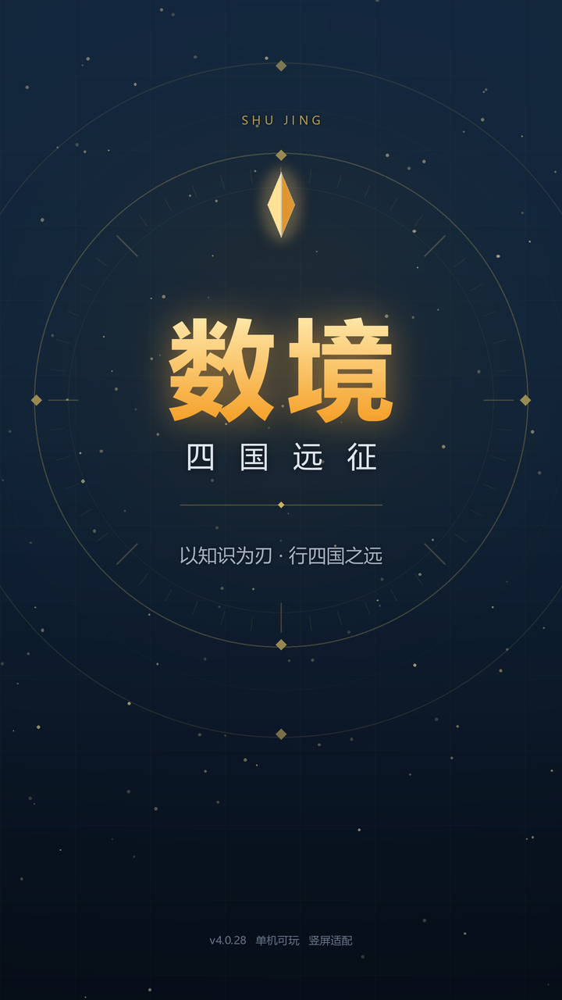
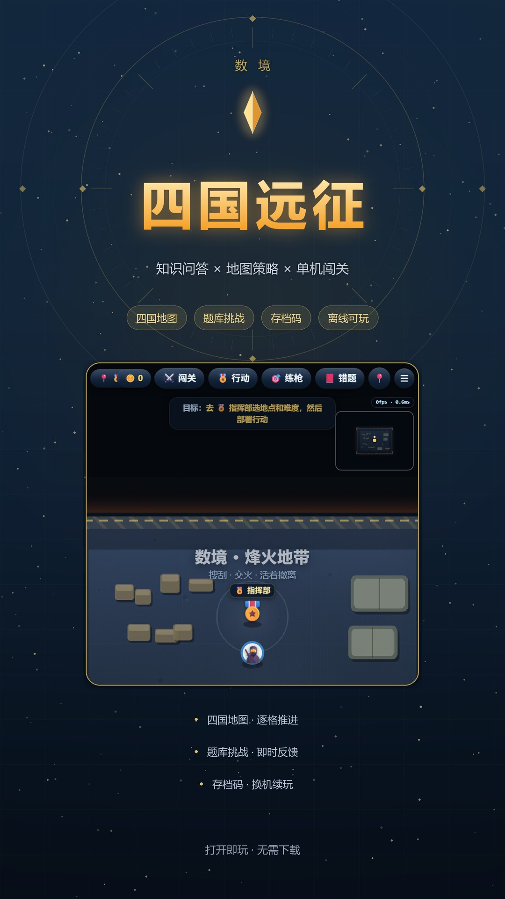
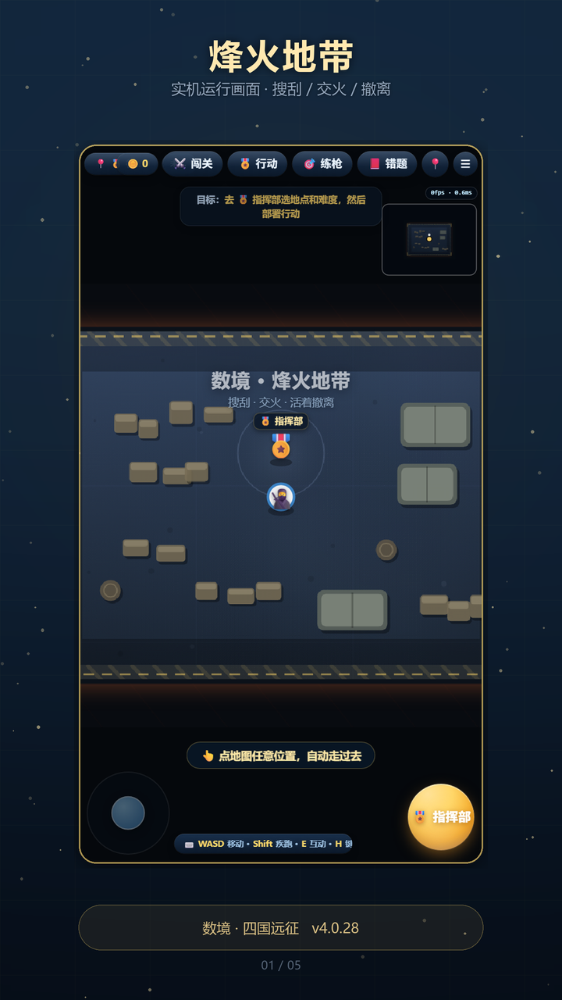

从「格物纪元 · 四国远征」到「数境」：源码、构建产物、上架素材、文档一次性切换完毕，历史归档保持原样。
改名不是改一行 <title>。这个项目的名字同时活在八个地方：首页标题、地图标题、菜单标题、
四个模式各自的标题、错题本导出表头、存档文件名、版本清单，以及已经生成好的截图与宣传图里。
这次把这八处一次改齐，再重新构建、重新截图、重新打包，最后用脚本复查到 0 处残留。
数境-v4.0.28.zip，商店名填「数境」，模式名保留副标题（如「数境 · 烽火地带」）。
「格物纪元 · 四国远征」的问题不在含义，在记忆成本：七个字、两组概念、还要解释「格物」的出处。 玩家在商店列表里扫一眼，记不住。而「数境」两个字自带画面感——数学的境界、数字的疆域， 既兜住了知识问答的内核，也容得下四个国家的地图探索；念起来短、写出来稳，图标里那条环也有了落点。
顺带一提：项目历史版本本来就叫「数境169」，这次相当于把被换掉的名字拿回来，去掉尾巴上的数字。
| 场景 | 写法 | 说明 |
|---|---|---|
| 游戏名 / 商店名 / 图标 | 数境 | 只保留主名，最干净 |
| 浏览器标题 / 版本清单 | 数境 | <title> 与 version.json 的 name |
| 闯关模式 | 数境 · 四国远征 | 主名 + 模式副标，出现在地图顶部与菜单 |
| 烽火地带 | 数境 · 烽火地带 | 同上 |
| 科学编年史 | 数境 · 科学编年史 | 同上 |
| 练枪场 | 数境 · 练枪场 | 同上 |
| 存档文件 | 数境存档_2026-10-22.txt | 导出时自动带日期 |
| 错题本导出 | 数境 · 错题本导出 2026-10-22 | 文件头标题 |
| 上传包 | 数境-v4.0.28.zip | 去掉多余的「四国远征」 |
| 层级 | 文件 | 处数 | 改了什么 |
|---|---|---|---|
| 源码 | src/00_head.html | 1 | 页面标题改为「数境」，不挂副标题 |
| 源码 | src/js/11_world.js | 2 | WORLD_TITLE 与文件头注释 |
| 源码 | src/js/50_epic_map.js | 2 | 闯关模式、科学编年史两个地图标题 |
| 源码 | src/js/52_blaze_entry.js | 1 | 烽火地带地图标题 |
| 源码 | src/js/53_drill4.js | 2 | 练枪场标题与面板副标 |
| 源码 | src/js/70_blaze_overrides.js | 1 | 菜单按模式切换的主标题 |
| 源码 | src/js/45_wrongbook_io.js | 1 | 错题本导出文件的表头 |
| 源码 | src/js/49_drill.js | 3 | 存档文件名与文件正文 |
| 配置 | version.json | 1 | name → 数境 |
| 产物 | shujing-app/、minitool/dist/ | — | 重新构建，两个入口标题均验证为「数境」 |
| 素材 | 启动图、宣传图、5 张截图 | — | 重新抓图并重新排版，画面内标题同步 |
| 文档 | 抖音配置 / 隐私政策 / 介绍 / 清单 | 11 | 标题、商店名、包名 |
| 文档 | 小红书指南与三份模板 | 9 | 同步改名 |
截图里的地图标题、宣传图顶部的品牌字、启动图的主标题都带着旧名，所以这次不是覆盖文字了事， 而是重新用无头浏览器抓界面、重新排版、重新导出。启动图主标题按两个字重排了字号（96 → 138px）， 否则「数境」两个大字撑不住原来的版面。



_alt/ring_blue.png（亮蓝白环，最接近你原来那张头像）与当前金色版同结构，
主线用金色是为了和启动图、宣传图统一。该目录不参与上传。
# 1. 重新构建单页应用与 minitool 产物 python tools/build.py python tools/build_minitool.py # 2. 重新抓实机截图，再生成全部素材 python tools/capture_game_shots.py python tools/make_douyin_assets.py # 3. 打包并按平台规格校验 python tools/pack_douyin_package.py
| 校验项 | 结果 | 状态 |
|---|---|---|
| 构建字节数 | 1,973,336 字节 / 74 个模块 | 通过 |
| 两个入口标题 | shujing-app 与 minitool/dist 均为「数境」 | 通过 |
| 活跃文件残留扫描 | 0 个文件 / 0 处 | 通过 |
| 图片规格 | 图标 512×512、启动图与截图 720×1280、宣传图 1080×1920 | 通过 |
| 音频 | 3 个 WAV，44.1kHz，最大 2.3 MB | 通过 |
| 游戏包 | 数境-v4.0.28.zip · 0.67 MB · index.html 在根目录 | 通过 |
数境-v4.0.28.zip + 图标 + 启动图 + 宣传图 + 5 张截图，按清单逐项勾选。